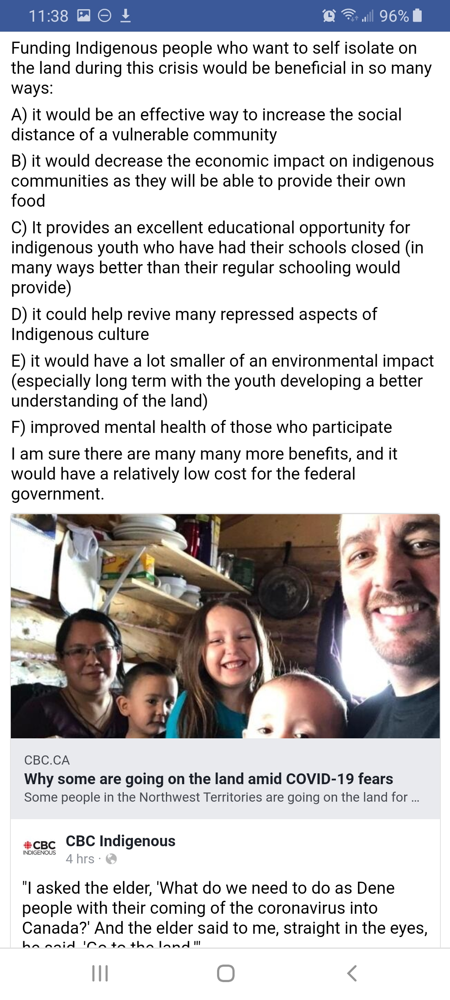
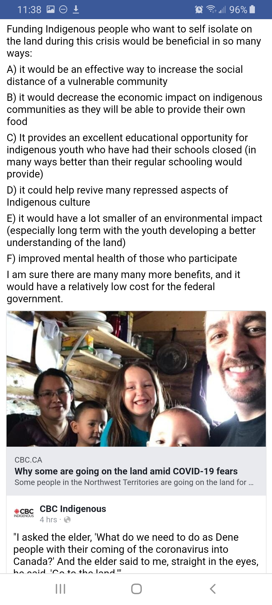
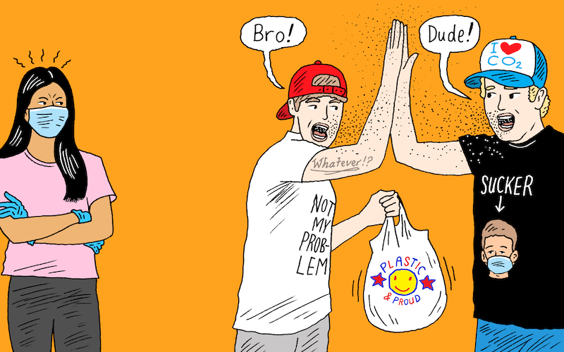
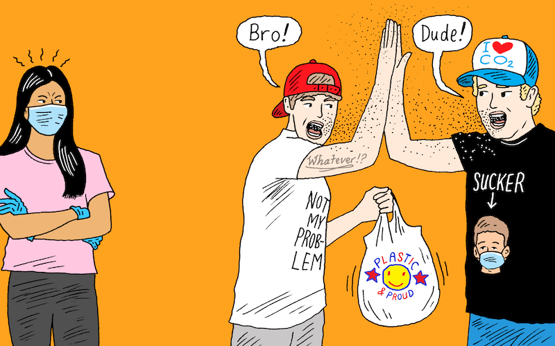
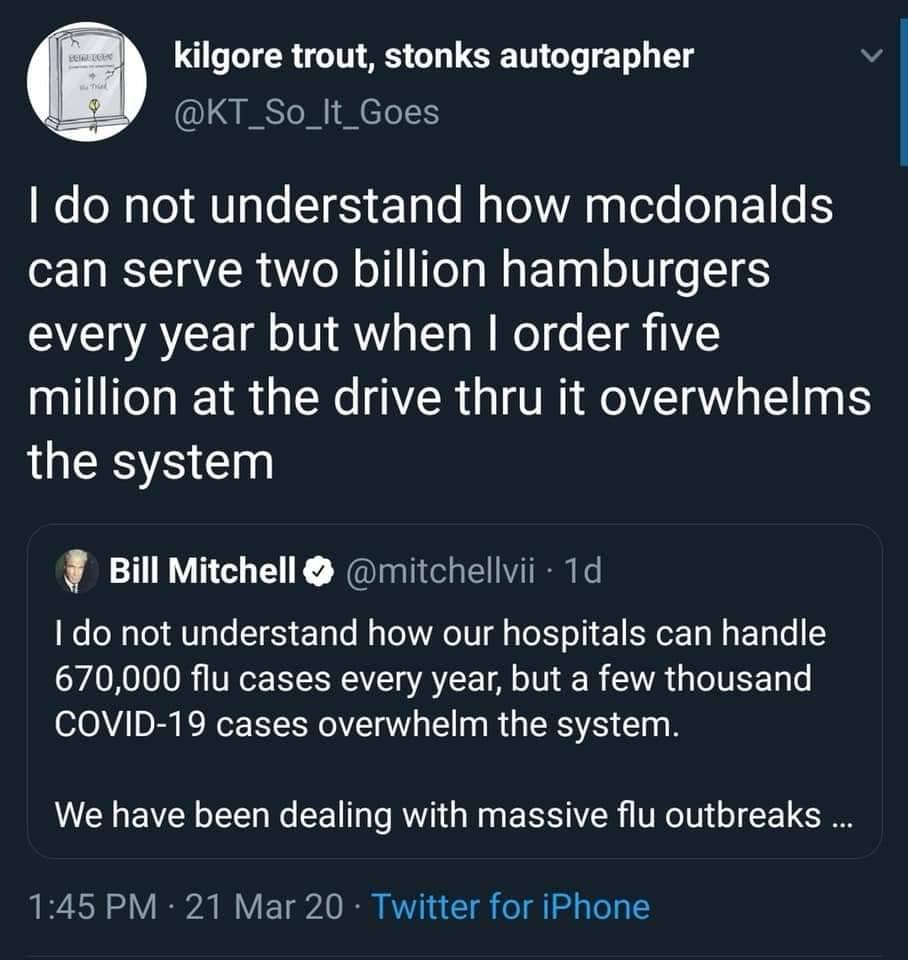
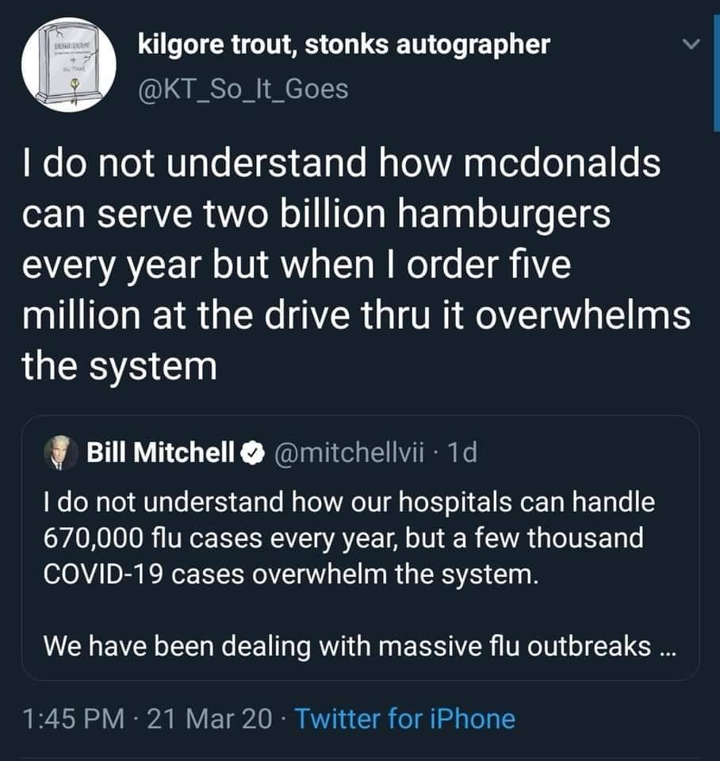
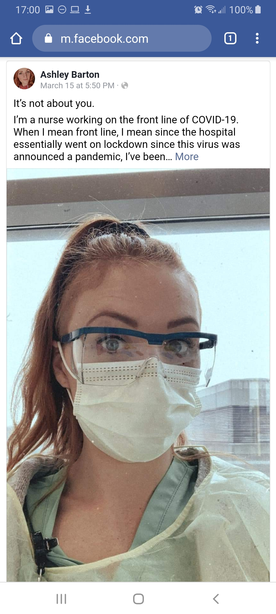
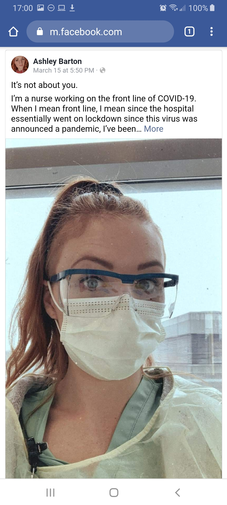

Welcome to a place dedicated to the madness of the Year 2020 and beyond! Glad you came. Wallow in some early, mid and late pandemic nostalgia. Please sanitize your hands before you enter and when you leave.
This blog was closed on: April 4 2021 because I need to move on with my life. Edit, I reopened the blog on April 16, 2021, because of third wave drama and this is my life now, I guess.
‘Enjoy’
+++++++++++++
Jump to ...
1. Intrology -- it's down below, just scroll ya lazy bum
I was online alot in 2020. The coronavirus stats and isolation from the world was a recipe for face-to-phone connection glue. Fortunately, I spent the first half of the pandemic on a farm where I had open spaces to work on projects and enjoy outdoors. But the onlineness bled into 2021, when I moved back to Urbania. During the US Capitol raid on January 6th, 2021, I could barely turn my gaze away from the events unfolding, and the madness of reporting that followed. Not keeping up to date on cases numbers, locations of nearby outbreaks, and ever-changing public health guidelines bordered on negligence, or at the very least, escapism. Not to mention, in terms of social connection, it was all many of us had.
Due to the sense of historicness or novelty of the year 2020, I started feeling compelled to snap photos and download some of the many expressions and reportings on outlets and platforms I encountered online, in addition to my regular habits. This blog is mostly found internet content. I tried to keep to publicly posted content and give credit where due. The odd section is original from me, and is marked as such.
This, then, is a time capsule of current events encountered over the Interwebs and seen in life, by me, from Dec 2019 - March 12 2021, with a focus on rural Manitoba and Toronto, Canada, university, education, social welfare and art. I'm limited to my crappy website building skills (and how many favors I can request from my skilled friends), but I tried to display my collection visually and somewhat meaningfully. Contains inaccuracies and mistakes. Not heavily researched, more like a diary. The categories are not as precise as I'd like, but the nature of this media is diverse and difficult to group. A narrow picture of primarily (but not limited to) the Covid-19 pandemic unfolding, how it affected so many areas of living, and some thoughts, creative projects, and initiatives it generated, relative to my particular social circle and interests (social media feeds). No effort has been made to make this representative of what was significant objectively. I do not support all the views contained in this blog. Neither do I believe to "agree to disagree" in all cases. However, I included some screen captures of opposing sides of debate because I wanted to document what debates were happening. Often these screen captures, whose names I occasionally blank out, are my friends, not strangers. It has always been imperative for me to understand as many sides to large public debates before I participate in them.
This blog was made after most collecting was done (March 2021), in the midst of Ontario's third wave and global vaccine efforts. This affected how I selected and commented on the content I had collected. For example, early in the spring of 2020 I was capturing the growing US cases with astonishment and I do confess a dose of that Canadian smugness that is too often a thing with us, not knowing we'd have our second wave that Fall. So, the collecting of content of the blog was in real time. With a couple of exceptions, such as the "nature is healing/dolphins are returning" meme, which I did see many of at the early pandemic but later searched to beef up the collection (as it is arguably the funniest meme of the pandemic), I did not search for items after; this is just what happened to cross my path.
As I watch the blossoming of Spring and the finale of the pandemic, in floral wreaths of vaccine selfies, memes on the reflection of a return to March where we left Life off as we knew it, and the celebration of the return to little things, but things so giant in an individual's life: the return of wind ensembles/choral singing in MB schools, or a beer shared with a small gathering of friends, something unexpected in the stitching together of this blog happened to me. It was a wave of guilty nostalgia for the early days of the pandemic, for that a sense of togetherness and urgency against a noble war, that faded into foggy amnesia and vaccine angst. Regrettably I'm closing this blog and won't document this celebratory ending, because I too feel an urgency to return to life and my professional goals; to the physical, wonderful world and away from the infinite digital world of news cycles, products and memes. Anyways here it is. Edits and contributions welcome.
Fun Facts!
- the coronavirus disease is caused by the SARS-CoV-2 virus
- named after the Latin word for ‘crown’ due to its characteristic crown-like spikes which can be observed when it is viewed under a microscope
- The official name of the disease was announced by the WHO in February to be COVID-19. CO - corona VI - virus D - disease 19 - year in which it was discovered (2019)
- colloquially referred to by many as coronavirus or simply ‘corona’. Source
Symptoms of COVID-19:
Common:
Fever | Dry cough | Fatigue Less common:
Loss of taste or smell | Nasal congestion | Conjunctivitis (also known as red eyes) | Sore throat | Headache | Muscle or joint pain | Different types of skin rash | Nausea or vomiting | Diarrhea | Chills or dizziness Severe:
Shortness of breath | Loss of appetite | Confusion | Persistent pain or pressure in the chest | High temperature (above 38 °C)
Source: WHO
* I know this is controversial to put these two words together, and I do not imply all public resistance to government control is a product of irrational conspiracy, but in the particular case of the pandemic it seemed to be out of a deliberate willfullness to ignore scientific consensus and an over-valuing of personal freedom and the cost of others
Film: Numb - a short film - liv mcneil > As a Toronto highschool art teacher in 2019-20 and 2020-21, this work impressed me greatly. Why, when it started, I became quite lenient and open in my curriculum (no late penalties, generous curving) and tried to keep the perspective throughout : that grades don't really matter, if we learn a little, that's more than enough. You can read about her film here. The YT comments dragged in a surprising assortment of garbage.
A Pandemic Christmas: BCI's A COVID Christmas ~ 2020 > viritual christmas concert in distanced classroom - Kudos to the amazing teachers for bringing this together TRACK SANTA he's even wearing a mask... WOW This is so awesome Lil Nas X - HOLIDAY (Official Video) > Not explicitly about the pandemic, but I thought this video released someone ecapsulated my christmas experience and others... isolated in our homes, with a dreadful, heavy, comforting holiday drudge of a song like this, immersed in hyper-media, it was so christmas, I was listening it to alot December 2020, the first apart from family in Toronto
Original Photography (mine unless otherwise credited)
Individually wrapped Communion crackers at Cornerstone Family Worship Centre, Hamiota, MB. March 15, 2020Washing groceries at the Farm, MB, as per public health instructions. May 15, 2020A line up outside a supermarket, Toronto, ON. May 15, 2020 [Photo courtesy Assaf Bar Natan]Cornerstone Family Worship Centre, Outdoor Service, Hamiota MB. Usher (Chris Stebelski) using a "socially distanced" Folgers coffee can ductaped to a hockey stick to receive offering. June 14, 2020Seeing first social distancing signs at Daly House Museum, Brandon MB (I barely left the farm for a few months). July 28, 2020Observing a surreal, empty Richardson Airport, Winnipeg MB, to return to my fiancé in Toronto after a very long, unexpected time apart. August 14, 2020Pesach over Zoom with family. Second year in a row. March 27, 2021Chronic vaccine shortage seen in Danforth region, Toronto (currently a non-hotspot region, but shortages in hotspot regions abound, and many essential workers are yet to be vaccinated.) April 25, 2021
500m Covid vaccine lineup near Jane and Finch (hotspot region), Toronto, ON. [Photo courtesy Dror Bar Natan] May 1, 2021
SUCCESS! ABN and I line up at Thorncliffe park at a pop-up clinic administered by Michael Garron Hospital in Toronto for a Pfizer shot. The intelligent system organized 1000's of hopefuls (average age 25 by the looks of it) into lines that advanced as a group and were let in. There was a separate system for those with appointments. Each advancement took about 10 mins. We waited around 12 lines. Wait was about 2 hours, and 1 hour inside a HUGE warehouse. There was an engergetic, live DJ for the entirety of our time there (whose playlist included 'I Walk The Line,' 'Stayin' Alive' and 'Another One Bites the Dust,' amongst contemporary hip hop, much to our amusement), and carts of free bottled water were handed out. The one remaining danger was sunburn, which is why we brought our own sunscreen. It looked like some were getting subburned. This incredibly efficient pop-up announced 9,000 vaccinated (by the DJ) as we left the building; 10,470 people in total according to this CBC arcticle. May 16, 2021
05.16.21 Lined up at Thorncliffe to get ABN's shot-- a pop-up clinic. Even if I hadn't specific medical reason to wait til June 4, the soonest I could get an appoinment on the website, weeks ago, when Essential workers group 1 any Toronto region was open, was June 11. We discussed why the pop up clinic was serving 1,000s when the appointments were so far into the future: lack of infrastructure, but it's faster to vaccinate the crowd. See above pictures in the Photo section. Trying not to read this while lining up for ABN's covid shot (he was getting Pfizer so felt a bit better) Langley-area man loses 2 metres of intestine after a blood clot following his AstraZeneca jab 2 in hospital with COVID-19 after taking part in Montreal health restrictions protest Defiant Church of God in Aylmer, Ont., moves large service outdoors after judge ordered church shut ""Behind me are the locked doors that somebody thought they had the authority to lock," Hildebrandt said during his sermon. "And we are here because we have the authority of God on our side." > of all the population that get covid-19, these people and the above, how can you sympathize with them.
One wierd thing out of Covid is the invasion of people's digital lives. Just now on a national press conference stream, you hear the jazz music hte minister was listening to as he quickly shuts it off as he goes live, and you know what computer they use (Windows) by the box notice sound effect as they closed something on their computer (probably without saving and it was asking "do you want to save?"
F* this guy, shame him to pieces. Cause an outbreak, he should pay out of pocket. 'More people are catching on': Travellers using U.S.-Canada land border to avoid quarantine hotels and f* our gov't for letting this stupidity happen. The ONE time we ACTUALLY need border control. 04.22.21Doug Ford confirms paid sick leave program for workers coming, apologizes for backtracking
How to deal with vaccine hesitancy? I wish Coca-cola could be in charge of advertising the vaccine... that would do it. My friend "introducing pfizer zero, diet moderna, and cherry-vanilla Johnson&Johnson
> are the hospitals gonna get so full that you can get simple procedures, in addition to elective surgeries ? The poulation is going to get so sick from everything else, from avoiding the walkin and getting stuff treated. has anyone been studying this ?
04.21.21Vaccination is happening!
04.20.21Derek Chauvin is convicted of all 3 charges in the death of George Floydd
04.18.21We've made it to international news. Washington Post: Opinion: Doug Ford should resign, in thisarticle (a canadian author) or Mclean's opinion article
04.16.21Doctors say Ontario ignored crucial 3rd wave warnings > even monkeys like me saw this coming, plain as day, and it happened.
CBC: Dr. Kali Barret > This has to be the most moving, most terrifying doctor interview I've seen yet. I have a feeling I will remember this all my life. Ontario critical care physician Dr. Kali Barrett describes how the COVID-19 pandemic is affecting vulnerable people and outlines some of the dramatic challenges facing hospitals in the province.
Reddit Update r/ontario: April 16, 2021
04.15.21 So.... CBC Interactives: Critical Condition So.... Ontario has built a field hospital in a Toronto parking lot and is moving adult covid patients into the Sick Kids hospital. Things aren't too great here right now. May be importing nurses from Nova Scotia because Toronto is running out of staff. I hope the Manitoba border stays closed so it doesn't move over there. We're not vaccinating fast enough and the shipments keep getting delayed so vaccine clinics in Toronto are closing temporarily. It would be nice to wait this storm out at the Farm
04.09.21CBC explains paid sick leave debate > diff b.w federal paid sick leave now and what ppl are asking for.
> Beef processing plant in Cargill the largest outbreak in N.A.?? Here's why Canadians have reason to be more optimistic about the COVID-19 vaccine rollout
> somewhat good protection for all is actually better for you than perfect protection for some (kill the virus cases waves and ICU). thinking self-first is acutally less goood for you as an individual and irrational, in this case. the mass of covid is what to be afraid of, which canada's first-dose policy could stem faster than few people with full doses.
12.24.20 Christmas Eve Santa Tracker : he wore a mask, something was magical on this gloomy Christmas Eve, watching him. So cute and dank at the same time.
11.27.20 AOC and Jagmeet Stream Among Us For the history books. So cool. Just secured all of Gen Z's future votes :p
11.26.20 - Synagogues/Cathlic church suing in US for religious descrimination due to anti-gathering laws to reduce covid. Why did they specifiy religious gatherings from indoor gathering? in MB both indoor and religious forbidden, in ON, religious gathering allowed when no indoor gathering : discrimination against those who aren't religious... why didn't they save the hassle and just say "no indoor gathering" which is more practical, as the reason for the gathering has nothing to do with transmission of covid.
11.18.20 NDP calling for universal pharmacare : but as my pharmacist reminded me later that day as I purchased the 1st of 3 HPV vaccines over $210, (didn't get one as a teen, they were just introducing them, now I have to pay for it) it doesn't matter, becuase if they are considered not covered, "non essential" vaccine, no healthcare will cover them
10.02.20 Trump Tests Positive for the Coronavirus > Emotion: HORRAY MAY HE SUFFER THEN DIE; Rational: trump needs to lose democratically to restore american faith in the electoral process, if he dies, there will be mass protests/proud boy lynching/chaos We can be united: how Biden responds:
07.23.20 The Economist Newsletter, Letter from Editor. "Our cover this week is about the profound shift taking place in economics as a result of the covid-19 pandemic. Much as in the 1970s when clubby Keynesianism gave way to Milton Friedman’s austere monetarism, and in the 1990s when central banks were given their independence, so the coronavirus marks a new paradigm. It is characterised by government borrowing, money-printing and intervention in capital markets—all underpinned by low inflation. Each era of economics confronts a new challenge. After the 1930s the task was to prevent depressions. In the 1970s and early 1980s the holy grail was to end stagflation. Today policymakers must create a framework that allows the business cycle to be managed and financial crises to be fought without a politicised takeover of the economy." Manitoba changes travel restrictions after public push back:
Controversy over MB gov't identifying cases in Hutterite colonies:
07.21.20 Walmart Requires Masks - the impact on employees:
07.20.20The Economist: Vaccines bring hope
Keeping Schools Open
07.01-18.20 Black Lives Matter
This was an important study: many used this as a criticism against BLM
07.11.20 AKIN (my art studio collective) restricted access- I stay in MB
07.08.20 US reaches 3M
06.26-07.02.20 The GREAT MANITOBA FLOOD
06.25.20 USA Cases
06.20.20 Cases Rise in US
06.16.20 USA Cases
06.10.20 Protests and the US election
06.03-16.20 Busineses, Sites, Celebs shows BLM support
06.02.20 Blackout on social medias: BLM support
05.27.20 US Covid Deaths Surpass 100 000
05.21.20 The Economist: Optimism that Covid-19 can bring environmental change
05.14.20 Universities announce the Fall Term will be Online
04.24-29.20 Nova Scotia Mass shooter , investigation
Literature & Quotes
"I can't breath" - George Floyd
> it was the defining quote of 2020 and 2021. From George Floyd's arrest and murder, BLM protests, Chauvin conviction, the anti mask rallys "I can't breath" with the mask, to the coronavirus itself, that robs the person of oxygen until death, and the devastation in India (April 2021) with a fatal oxygen shortage and people suffocating to death. It is truly the capturing statement.
Ecclesiastes 3:5 NIV "... a time to embrace and a time to refrain from embracing"
La Peste, by Albert Camus
Most overused jokes of 2020:
- "My Corona" Parodies ("My Sharona," The Knack, 1979)
- Various riffs on Corona beer
Most underused joke of 2020:
Raccoon, maskot of pandemic, washes hands, wears a mask, rearange the letters to spell "corona" (kind of).
Quote of the year: Jan 1st 2021 : "2020 is Hindsight"
My definitions: Isolation sickness, n. Feeling of agitation, anger, despair from chronic lack of in-person social connection, like cabin fever but much severe, with a flavour of existential crisis. Pandemic blues, n. Feeling over overwhelming grief or sense of loss regarding society or a community at whole, as a result of the Covid-19 pandemic.
Thoughts March 12, 2021. On use of syringe imagery in articles. A persistent source of wonder and vexation for me, in the online coverage of the pandemic throughout the past year, has been the pervasive use of stock imagery of needles and people getting needles, gracing nearly every article and news page on Covid-19, wherever I looked. How does this not affect people with needle phobia? We need to decrease vaccine hesitancy to get the pandemic over, and it's a real thing for many. Certainly, the imagery exacerbates the fear some may have. Why do the news outlets insist on the closeup photos of flesh-deep needles in arms, vaccine mid-injection, or close-ups of syringe tips? What is possibly gained by this specific imagery? How has this not been discussed, or thought through?


 



 



 > From the laywer that could not take his cat filter off during a hearing (see the now infamous clip in Noteworthy Videos)
> From the laywer that could not take his cat filter off during a hearing (see the now infamous clip in Noteworthy Videos)

 



 
